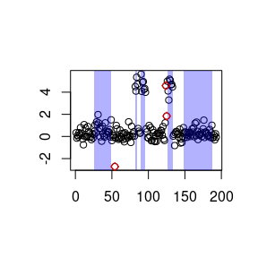
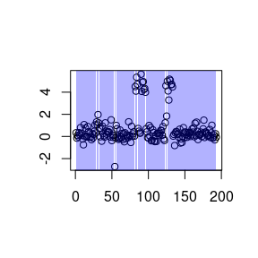
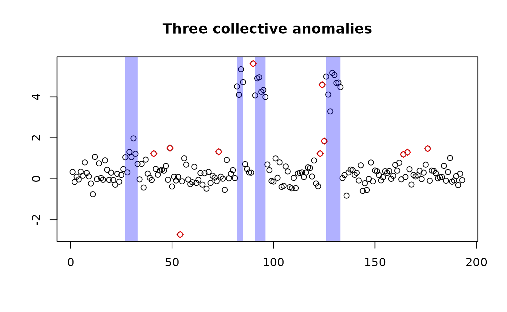
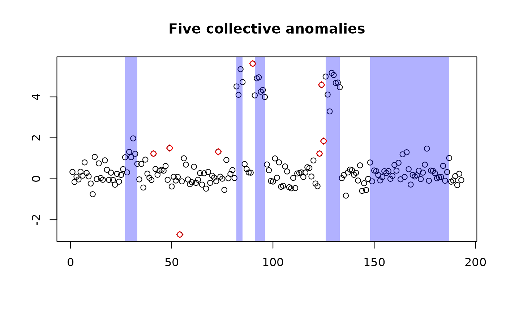

The purpose of this vignette is to present a basic introductions and demonstrate the uses of the anomalous package.
Context
The package contains native R implementations of the PELT and CAPA algorithms for
changepoint and anomaly detection. While slower then the optimised
implementations found in the changepoint and
anomaly packages repectively the results from use of this
package should be identical; while the code structure is designed to
make it easier to develop new cost functions. Currently this package
does not support the full range of multivariate series partioning in the
changepoint and anomaly packages.
The implementation in this package is build around an S3
class anomalous_partition for storing information about the
partitiaioning of the data and R6 classes for the cost
functions relating to fitting different distributions to the data.
The CAPA and PELT implementations make use of the methods of the
anomalous_partition class. This allows for the replacement
of the current anomalous_partition class with a new class
with similarly names methods. The structure and creation of the
R6 classes for cost functions are outlined in a seperate vignette
To demonstrate the us o the package we used the data shown in Fig. 4 of <Lai et al. (2005)> who compare different methods for segmenting array comparative genomic hy- bridization (aCGH) data from Glioblastoma multiforme (GBM), a type of brain tumor. These arrays were developed to identify DNA copy number alteration corresponding to chromosomal aberrations. High-throughput aCGH data are intensity ratios of diseased vs. control samples indexed by the location on the genome. Values greater than 1 indicate diseased samples have additional chromosomes and values less than 1 indicate fewer chromosomes. Detection of these aberrations can aid future screening and treatments of diseases.
The data are included in the package and can be loaded with
Using CAPA for anomalies
Start by considering the detection of abberations as an anomaly
problem. Following the analysis presented in
To match the penalites for the introduction of collective and point
anomalies to the defaults in the anomaly package the record
of the partions is created using
p <- partition(beta = 4*log(length(y)), ## collective anomaly penalty
betaP = 3*log(length(y)), ## point anomaly penalty
min_length = 2 ## minimuum length of a collective anomaly
)The CAPA algorithm can then be run
res <- capa(p,fCost)Calling the summary method of the output shows the same partitions as
found in
summary(res)
#> start end type cost
#> 1 1 25 background 31.88392656
#> 2 26 49 collective 78.65204722
#> 3 50 53 background 0.22817547
#> 4 54 54 point 20.62940200
#> 5 55 81 background 40.73680860
#> 6 82 85 collective 26.75901708
#> 7 86 89 background 6.63046985
#> 8 90 96 collective 36.79436850
#> 9 97 123 background 52.30610102
#> 10 124 124 point 21.67351730
#> 11 125 125 point 19.84613012
#> 12 126 133 collective 41.31343158
#> 13 134 147 background 16.51098244
#> 14 148 187 collective 61.73802014
#> 15 188 193 background -0.05576323while the results can be plotted on the data using
plot(res,yy=y)
Using PELT for change points
This section repeats the Glioblastoma case study of to allow
comparision in the usage of this package to the
The cost function is set up in exactly the same way as for the CAPA
analyis. The penalty for the penalisation of the introduction of a new
segment is based on the BIC. An anomalous_partion can be
created using this penalty
Note that the partition veiws the changepoint segments as a series of collective anomalies, so there is no need to specify a point anomaly penalty. Computing the partitioning
res <- pelt(p,fCost)and plotting the outcome
plot(res,yy=y)
shows idientical results to <>.
CROPS for varaible penalties
<> build upon PELT to provide a efficent algorithm for searhcing over the penalty term in the changepoint problem to determine, for a range of penalties, the possible changepoint locations. This algorithm is also suitable for use with CAPA so long as the point anomaly penalty is fixed.
Building upon the changepoint analysis we can consider the identification as an an anomaly problem. Since it is expected that the value is 0 mean we can look for changes around this by specifying the mean and variance of the background distribution
The analysis for a single set of penalties could proceed as before but instead let us consider using crops to study a range of penalties
p <- crops(log(length(y)), 6*log(length(y)), fCost, alg=capa, betaP = 2*log(length(y)), min_length=2)The output contains the anomalous_partition classes for
different numbers of collective anomalies which can be plotted in the
usual way.
plot(p$outRec[["4"]],yy=y,main="Three collective anomalies")
plot(p$outRec[["5"]],yy=y,main="Five collective anomalies")